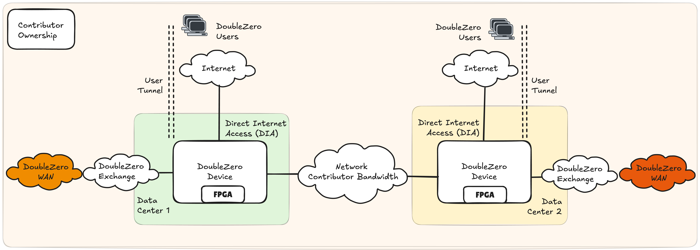
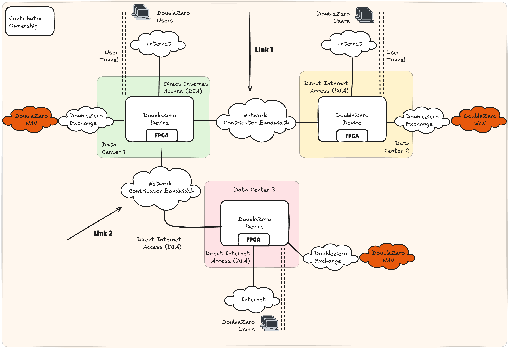
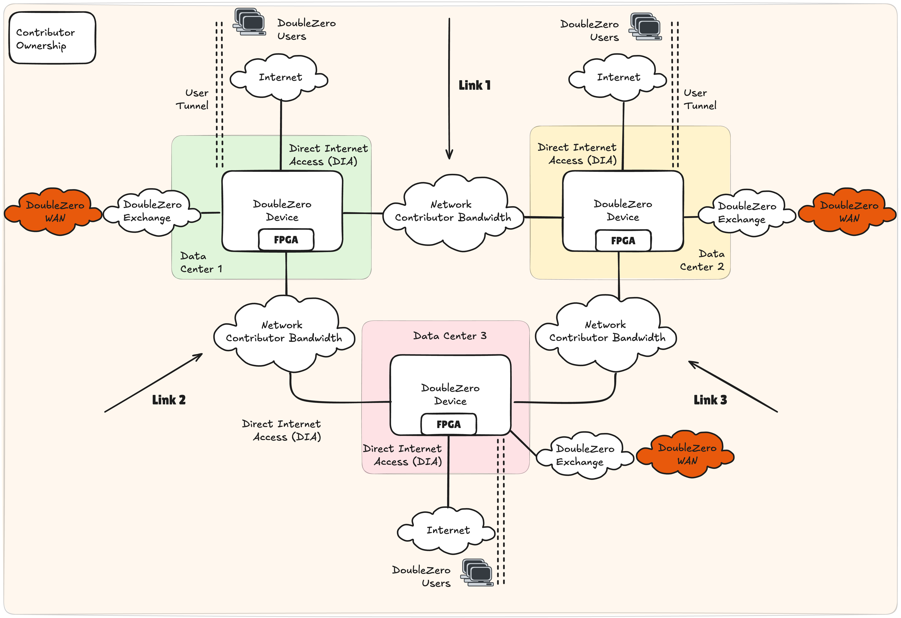
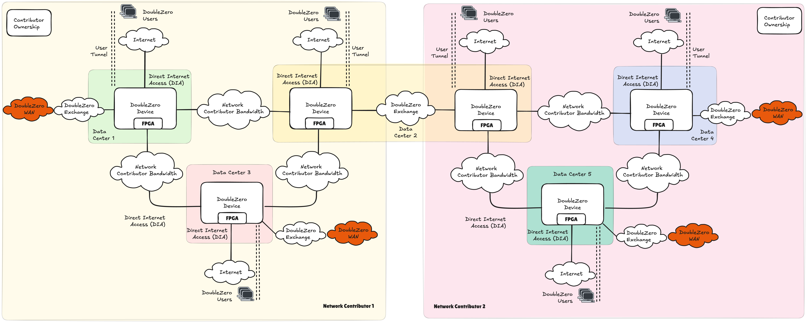
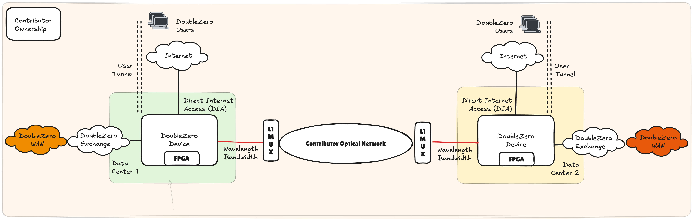
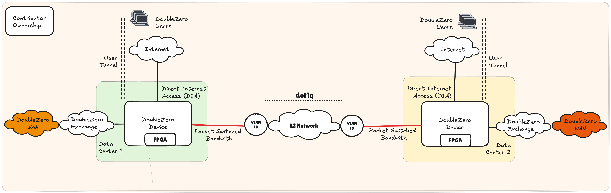
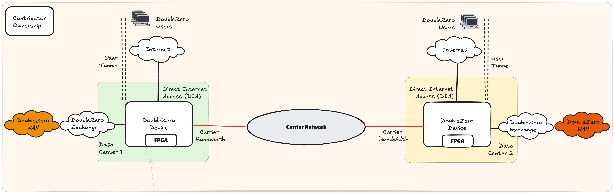

Exigences et Architecture des Contributeurs
This translation was generated using artificial intelligence and has not been reviewed by a human translator. It may contain inaccuracies or errors and should not be relied upon.
Résumé
Toute personne souhaitant monétiser ses câbles à fibre optique et son matériel réseau sous-utilisés peut contribuer au réseau DoubleZero. Les contributeurs réseau doivent fournir une bande passante dédiée entre deux points, exploiter des dispositifs compatibles DoubleZero (DZD) à chaque extrémité, et une connexion à l'internet public à chaque extrémité. Les contributeurs réseau doivent également exécuter des logiciels DoubleZero sur chaque DZD pour fournir des services comme le multicast, la recherche d'utilisateurs, et le filtrage en périphérie.
Le contrat intelligent DoubleZero est la pierre angulaire pour garantir que le réseau maintient des liaisons de haute qualité qui peuvent être mesurées et intégrées dans la topologie, permettant à nos contrôleurs de réseau de développer le chemin le plus efficace de bout en bout entre nos différents utilisateurs et points d'extrémité. Lors de l'exécution du contrat intelligent et du déploiement du matériel réseau et de la bande passante, une entité est classifiée comme contributeur réseau. Voir DoubleZero Economics pour mieux comprendre les aspects économiques de la participation à DoubleZero en tant que contributeur réseau.
Exigences pour être un Contributeur Réseau DoubleZero
- Bande passante dédiée pouvant fournir une connectivité IPv4 et un MTU de 2048 octets entre deux centres de données
- Matériel DoubleZero Device (DZD) compatible avec le protocole DoubleZero
- Connectivité à internet et aux autres contributeurs réseau DoubleZero
- Installation du logiciel DoubleZero sur le DZD
Guide de Démarrage Rapide
En tant que contributeur réseau, la façon la plus simple de commencer avec DoubleZero est d'identifier la capacité dans votre réseau qui peut être dédiée à DoubleZero. Une fois identifiés, des DZD doivent être déployés, facilitant le réseau superposé DoubleZero qui ne nécessite que la connectivité IPv4 et un MTU minimum de 2048 octets comme dépendances du réseau du contributeur.
La figure 1 met en évidence le modèle le plus simple pour contribuer des services de bande passante et d'envoi et de traitement de paquets. Un DZD est déployé dans chaque centre de données, s'interfaçant avec le réseau interne du contributeur réseau pour fournir une connectivité WAN DoubleZero. Cela est complété par un internet local, généralement une solution d'Accès Direct à Internet (DIA), qui est utilisé comme points d'entrée pour les utilisateurs DoubleZero. Bien qu'il soit prévu que DIA sera l'option préférée pour faciliter l'accès aux utilisateurs de DoubleZero, de nombreux modèles de connectivité sont possibles, par exemple le câblage physique vers des serveurs, l'extension de fabric réseau, etc. Nous appelons ces options Choose Your Own Adventure (CYOA), offrant au contributeur la flexibilité de connecter des utilisateurs locaux ou distants d'une manière qui convient le mieux à leurs politiques réseau internes.
Comme pour tout réseau, la connectivité est une partie fondamentale de l'architecture, car les contributeurs réseau ne peuvent pas vivre en isolement. En tant que tel, le DZD doit avoir un lien vers un DoubleZero Exchange (DZX) pour créer un réseau contigu entre les participants.

Exemples de Contributions
Les façons dont un contributeur réseau peut développer ses contributions DoubleZero sont nombreuses, notamment :
- Améliorer les caractéristiques de performance de leurs contributions existantes : augmenter la bande passante, réduire la latence
- Ajouter plusieurs liens entre les mêmes centres de données
- Ajouter un nouveau lien d'un centre de données existant vers un nouveau centre de données
- Ajouter un nouveau lien indépendant entre deux nouveaux centres de données
Exemple 1 : Contributeur Unique, 3 Centres de Données, Deux Liens

Un seul DZD peut prendre en charge plusieurs liens contribués à DoubleZero. La figure 2 illustre une topologie potentielle si un seul centre de données, désigné comme 1, termine la bande passante vers deux centres de données distants différents 2 et 3. Dans ce scénario, chaque centre de données ne contient qu'un seul DZD. Tous les DZD utilisent DIA pour les points d'entrée des utilisateurs comme interface CYOA.
Exemple 2 : Contributeur Unique, 3 Centres de Données, Trois Liens
La figure 3 décrit la topologie DoubleZero lorsqu'un seul contributeur déploie trois liens dans une topologie en triangle entre 3 centres de données. Dans un scénario similaire à l'exemple 1, un seul DZD est déployé dans les centres de données 1, 2 et 3, chacun prenant en charge 2 liens réseau indépendants. La topologie résultante est un triangle ou anneau entre les centres de données.

DoubleZero Exchange
La création d'un réseau contigu est un élément fondamental de l'architecture DoubleZero. Les contributeurs s'interfacent via un DoubleZero Exchange (DZX) dans une zone métropolitaine, qui est une ville comme New York (NYC), Londres (LON) ou Tokyo (TYO). Un DZX est une fabric réseau similaire à un Internet Exchange, permettant le peering et l'échange de routes.
Dans la figure 4, le contributeur réseau 1 opère dans les centres de données 1, 2 et 3, tandis que le contributeur réseau 2 opère dans les centres de données 2, 4 et 5. En s'interconnectant dans le centre de données 2, la portée du réseau DoubleZero s'étend à 5 centres de données contigus.

Options de Contribution de Bande Passante
DoubleZero exige qu'un contributeur réseau offre une connectivité intégrée via une bande passante garantie, un profil de latence et de gigue entre les DZD de deux centres de données de terminaison, exprimé via un contrat intelligent. DoubleZero ne mandate pas la façon dont un contributeur réseau met en œuvre sa contribution ; cependant, dans les sections suivantes, nous fournissons des options indicatives à leur usage à leur seule discrétion.
Les domaines importants à considérer pour un contributeur réseau pourraient être :
- Capacité à garantir les performances réseau du service DoubleZero : bande passante, latence et gigue
- Ségrégation de leurs services réseau internes existants
- Conflits d'adressage IPv4, en particulier avec l'espace d'adresses du tunnel underlay
- Temps de disponibilité et disponibilité
- Considérations CAPEX et OPEX
Bande Passante de Couche 1

La bande passante de couche 1, plus formellement décrite comme services de longueur d'onde, peut voir une capacité dédiée provisionnée sur une infrastructure optique existante, telle que DWDM, CWDM ou via des multiplexeurs optiques (MUX). Dans la figure 5, les DZD utilisent une optique colorée câblée à un MUX L1, qui entrelace la longueur d'onde du DZD sur une fibre noire existante.
Cette solution présente de nombreux avantages pour les contributeurs réseau qui exploitent déjà un réseau cœur existant. Les changements opérationnels itératifs, ainsi que les exigences supplémentaires en CAPEX et OPEX, sont modestes. Cette option est particulièrement robuste pour offrir la ségrégation des services réseau du contributeur.
Bande Passante Commutée par Paquets
Les réseaux commutés par paquets peuvent être considérés comme un réseau d'entreprise typique, exécutant des protocoles de routage et de commutation standard prenant en charge des applications commerciales. Il existe de nombreuses technologies réseau qui permettent la connectivité, par exemple, les extensions de couche 2 (L2) utilisant des balises VLAN.
Extension L2

Une extension L2 comme illustrée dans la Figure 6 peut être facilitée par le balisage VLAN. Le port d'un DZD peut être câblé au commutateur du réseau interne d'un contributeur, avec le port de commutation configuré en mode accès dans, par exemple, VLAN 10. Via le balisage 802.1q, ce VLAN peut être transporté sur plusieurs sauts de commutation sur le réseau du contributeur, se terminant au commutateur interfaçant avec le DZD distant.
Cette solution bénéficie d'un large support et d'une mise en œuvre relativement facile tout en créant une segmentation entre DoubleZero et les services de couche 3 internes. La bande passante peut être contrôlée en fonction de la vitesse d'interface du commutateur ou routeur interne du contributeur. Une attention particulière doit être accordée aux performances sur le réseau L2 interne partagé via des technologies telles que la Qualité de Service (QoS) ou d'autres politiques de gestion du trafic. Cependant, les investissements supplémentaires en CAPEX et OPEX devraient être modestes si la capacité existante est disponible dans le réseau cœur du contributeur.
Bande Passante Tierce Dédiée

Bien que la réutilisation de la capacité disponible soit attrayante pour de nombreux contributeurs réseau, on peut également dédier une bande passante nouvellement acquise à DoubleZero. Dans un tel scénario, le DZD se connecterait directement au transporteur tiers sans aucun dispositif interne du contributeur en ligne (figure 7).
Cette option est attrayante car elle garantit une bande passante dédiée pour DoubleZero, est simple opérationnellement et assure une ségrégation complète de tout autre service réseau. Cette option aura probablement la plus forte augmentation d'OPEX et nécessite de nouveaux contrats de service avec des transporteurs tiers.
Exigences Matérielles
Contribution de Bande Passante 100Gbps
Notez que les quantités ci-dessous reflètent le matériel nécessaire dans deux centres de données, c'est-à-dire le matériel total nécessaire pour déployer 1 câble à fibre optique pour la contribution de bande passante.
*Tous les FPGA sont soumis à des tests finaux. Les contributions 10G peuvent être prises en charge à l'aide de commutateurs Arista 7130LBR avec FPGA Virtex® UltraScale+™ double intégré (si vous avez des questions, la DoubleZero Foundation / Malbec Labs sont heureux de fournir plus d'informations).
Exigences de Fonction et de Port
| Fonction | Vitesse de Port | Exigence DZ | QTY | Note |
|---|---|---|---|---|
| Bande Passante Privée | 100G | Oui | 1 | |
| Accès Direct à Internet (DIA) | 10G | Oui | 2 | |
| DoubleZero eXchange (DZX) | 100G | Oui* | 1 | Doit être pris en charge une fois que plus de 3 fournisseurs opèrent dans la même zone métropolitaine, avant cela, des interconnexions croisées ou d'autres arrangements de peering peuvent être utilisés pour s'interconnecter avec d'autres fournisseurs. |
| Gestion | Non | 1 | Déterminé par les politiques de gestion internes du contributeur. | |
| Console | Non | 1 | Déterminé par les politiques de gestion internes du contributeur. |
Matériel Réseau DZD
| Fabricant | Modèle | Numéro de Pièce | Exigence DZ | QTY | Note |
|---|---|---|---|---|---|
| AMD* | V80* | 24540474 | Oui | 4 | |
| Arista | 7280CR3A | DCS-7280CR3A-32S | Oui | 2 | Des alternatives peuvent être possibles si les délais de livraison sont difficiles. |
Optiques - 100G
| Fabricant | Modèle | Numéro de Pièce | Exigence DZ | QTY | Note |
|---|---|---|---|---|---|
| Arista | 100GBASE-LR | QSFP-100G-LR | Non | 16 | Le choix du câblage et de l'optique est à la discrétion du contributeur. 100G requis pour connecter les FPGA. |
Optiques - 10G
| Fabricant | Modèle | Numéro de Pièce | Exigence DZ | QTY | Note |
|---|---|---|---|---|---|
| Arista | 10GBASE-LR | SFP-10G-LR | Non | 2 | Le choix du câblage et de l'optique est à la discrétion du contributeur. |
| Finisar | DynamiX QSA™ | MAM1Q00A-QSA | Non | 2 | Le choix du câblage et de l'optique est à la discrétion du contributeur. |
Adressage IP
| Adressage IP | Taille de Sous-réseau Minimale | Exigence DZ | Note |
|---|---|---|---|
| IPv4 Public | /29 | Oui (pour DZD de périphérie/hybrides) | Doit être routable via DIA. Nous pourrions éliminer ce besoin au fil du temps. |
Veuillez vous assurer que le pool /29 complet est disponible pour le protocole DZ. Les exigences pour l'adressage point à point, par exemple sur les interfaces DIA, doivent être gérées via un pool d'adresses différent.
Contribution de Bande Passante 10Gbps
Notez que les quantités reflètent le matériel de deux centres de données, c'est-à-dire le matériel total nécessaire pour déployer 1 contribution de bande passante.
Exigences de Fonction et de Port
| Fonction | Vitesse de Port | Exigence DZ | QTY | Note |
|---|---|---|---|---|
| Bande Passante Privée | 10G | Oui | 1 | |
| Accès Direct à Internet (DIA) | 10G | Oui | 2 | |
| DoubleZero eXchange (DZX) | 100G | Oui* | 1 | Doit être pris en charge une fois que plus de 3 fournisseurs opèrent dans la même zone métropolitaine ; avant cela, des interconnexions croisées ou d'autres arrangements de peering peuvent être utilisés pour s'interconnecter avec d'autres fournisseurs. |
| Gestion | Non | 1 | Déterminé par les politiques de gestion internes du contributeur. | |
| Console | Non | 1 | Déterminé par les politiques de gestion internes du contributeur. |
Matériel
| Fabricant | Modèle | Numéro de Pièce | Exigence DZ | QTY | Note |
|---|---|---|---|---|---|
| AMD* | V80* | 24540474* | Oui | 4 | |
| Arista | 7280CR3A | DCS-7280CR3A-32S | Oui | 2 | Des alternatives peuvent être possibles si les délais de livraison sont difficiles. |
Optiques - 100G
| Fabricant | Modèle | Numéro de Pièce | Exigence DZ | QTY | Note |
|---|---|---|---|---|---|
| Arista | 100GBASE-LR | QSFP-100G-LR | Non | 14 | Le choix du câblage et de l'optique est à la discrétion du contributeur. 100G requis pour connecter les FPGA. |
Optiques - 10G
| Fabricant | Modèle | Numéro de Pièce | Exigence DZ | QTY | Note |
|---|---|---|---|---|---|
| Arista | 10GBASE-LR | SFP-10G-LR | Non | 4 | Le choix du câblage et de l'optique est à la discrétion du contributeur. |
| Finisar | DynamiX QSA™ | MAM1Q00A-QSA | Non | 4 | Le choix du câblage et de l'optique est à la discrétion du contributeur. |
| --- |
Adressage IP
| Adressage IP | Taille de Sous-réseau Minimale | Exigence DZ | Note |
|---|---|---|---|
| IPv4 Public | /29 | Oui (pour DZD de périphérie/hybrides) | Doit être routable via DIA. Nous pourrions éliminer ce besoin au fil du temps. |
Veuillez vous assurer que le pool /29 complet est disponible pour le protocole DZ. Les exigences pour l'adressage point à point, par exemple sur les interfaces DIA, doivent être gérées via un pool d'adresses différent.
Exigences du Centre de Données
Exigences de Baie et d'Alimentation
| Exigence | Spécification |
|---|---|
| Espace Baie | 4U |
| Alimentation | 4KW (recommandé) |
Prochaines Étapes
Prêt à provisionner votre premier DZD ? Continuez avec le Guide de Provisionnement des Dispositifs.